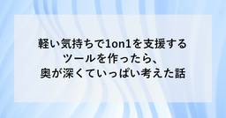

SHIFT Group 技術ブログ
https://note.shiftinc.jp
「無駄をなくしたスマートな社会の実現」を目指し、ソフトウェア製品の開発、運用、マーケティングなどあらゆる立場から携わるSHIFT Groupの公式note。エンタメ・ゲーム業界から、Web系、金融／製造／小売りなどのエンタープライズ業界まで広い知見を活かした情報を発信しています。
フィード

軽い気持ちで1on1を支援するツールを作ったら、奥が深くていっぱい考えた話
SHIFT Group 技術ブログ
こちらは、公式アドベントカレンダー2024_A IT技術関連トピック Day.20 の記事です。公式アドベントカレンダー2024_B 仕事術・キャリア・体験記も毎日記事を公開していますので、ぜひあわせてご覧下さい。★Day19のアドベントカレンダー記事「shadcn/uiとDuckDB Wasmで軽量で直感的なデータ可視化を実践」（Kenta Koshiishi）続きをみる
1時間前
楽しく幸せに働くために、他人との比較をやめてみよう！
SHIFT Group 技術ブログ
🎄こちらは、公式アドベントカレンダー2024_B 仕事術・キャリア・やってみた系 Day.20 の記事です。公式アドベントカレンダー2024_A IT技術関連トピック も毎日記事を公開していますので、ぜひあわせてご覧下さい。★ひとつ前のアドベントカレンダー記事「IT未経験新卒が半年社会人経験して感じたコミュニケーションの壁-テキストコミュニケーション編-」～悩みやストレスから解放されて、楽しく、幸せ（Well-being）に働くための経験者のアドバイス～続きをみる
1時間前

IT未経験新卒が半年社会人経験して感じたコミュニケーションの壁－ビジネスチャット編－
SHIFT Group 技術ブログ
🎄こちらは、公式アドベントカレンダー2024_B 仕事術・キャリア・やってみた系 Day.19 の記事です。公式アドベントカレンダー2024_A IT技術関連トピック も毎日記事を公開していますので、ぜひあわせてご覧下さい。★ひとつ前のアドベントカレンダー記事SHIFTのSAP基礎研修ってすごい！～未経験者が7日間でマスター～自己紹介続きをみる
1日前

shadcn/uiとDuckDB Wasmで軽量で直感的なデータ可視化を実践
SHIFT Group 技術ブログ
こちらは、公式アドベントカレンダー2024_A IT技術関連トピック Day.19 の記事です。 公式アドベントカレンダー2024_B 仕事術・キャリア・体験記も毎日記事を公開していますので、ぜひあわせてご覧下さい。★Day18のアドベントカレンダー記事「SQL応用編 ～ JOINを駆使して脱初心者 ～」（鳥羽千明）続きをみる
1日前

【AWS Update】AWS Identity and Access Management（IAM）でルート認証情報を一元管理可能になりました
SHIFT Group 技術ブログ
1．はじめに続きをみる
2日前

AWSパートナージャーニー、AWSベンダー日本一への挑戦手記（立志編）
SHIFT Group 技術ブログ
皆様こんにちは。 AWSのイベント大好き、SWAG収集家の大瀧と申します。株式会社SHIFTでAWSのCCoEリーダー兼、AWSセキュリティコンサルタントをやっています。 おそらくこの記事を読んでくれているほとんどの方は、これからAWSのパートナー企業になる、もしくはAWSのパートナー企業としてランクを上げる役割の方かと思います。私は、SHIFTでこの役割を中心人物としてやっており、実際にAWSセレクトティアサービスパートナーだったSHIFTを１年足らずで、AWSアドバンストティアサービスパートナーに引き上げた実績を持っています。 この記事は、その際に苦労した知見を共有し、AWSパートナー企業の推進担当者の方々に対し、難しさや、やりがいを与えたいと思い書いたものです。おそらく、こういった記事は世の中にあまり存在していないと思います。なぜなら私自身、こういった体験談の情報がなく、手探りでこの活動始め、たいへん苦労したからです。なので、このブログが誰かのお役に立ち、励みになれば幸いです。続きをみる
2日前

SQL応用編 ～JOINを駆使して脱初心者～
SHIFT Group 技術ブログ
こちらは、公式アドベントカレンダー2024_A IT技術関連トピック Day.18 の記事です。公式アドベントカレンダー2024_B 仕事術・キャリア・体験記も毎日記事を公開していますので、ぜひあわせてご覧下さい。★Day17のアドベントカレンダー記事「スクラムで性格診断を活用したミーティング活性化【ソーシャルスタイル編】」（伊藤 慶紀）続きをみる
2日前

SHIFTのSAP基礎研修ってすごい！～未経験者が7日間でマスター～
SHIFT Group 技術ブログ
🎄こちらは、公式アドベントカレンダー2024_B 仕事術・キャリア・やってみた系 Day.18 の記事です。公式アドベントカレンダー2024_A IT技術関連トピック も毎日記事を公開していますので、ぜひあわせてご覧下さい。★ひとつ前のアドベントカレンダー記事「新人教育は読解力向上が8割」はじめに続きをみる
2日前


pmconf 2024 参加レポート
SHIFT Group 技術ブログ
こんにちは、髙橋直規です。アジャイルでのプロダクト開発においてPjMとして活動しております。POアシスタントしての役割も担うこともあり、プロダクトマネジメントについて知見を深めたく、12/6(金)に開催されたプロダクトマネージャーカンファレンス 2024 に参加してきましたのでレポートします。弊社もシルバースポンサーとして協賛しております。続きをみる
3日前


新人教育は読解力向上が8割
SHIFT Group 技術ブログ
🎄こちらは、公式アドベントカレンダー2024_B 仕事術・キャリア・やってみた系 Day.17 の記事です。公式アドベントカレンダー2024_A IT技術関連トピック も毎日記事を公開していますので、ぜひあわせてご覧下さい。★ひとつ前のアドベントカレンダー記事「新卒研修は『ストーリーと場』が8割」続きをみる
3日前

スクラムで性格診断を活用したミーティング活性化【ソーシャルスタイル編】
SHIFT Group 技術ブログ
こちらは、公式アドベントカレンダー2024_A IT技術関連トピック Day.17 の記事です。公式アドベントカレンダー2024_B 仕事術・キャリア・体験記も毎日記事を公開していますので、ぜひあわせてご覧下さい。★Day16のアドベントカレンダー記事「パケットをキャプチャして理解するTCP」（佐藤翔太）続きをみる
3日前

パケットをキャプチャして理解するTCP
SHIFT Group 技術ブログ
こちらは、公式アドベントカレンダー2024_A IT技術関連トピック Day.16 の記事です。公式アドベントカレンダー2024_B 仕事術・キャリア・体験記も毎日記事を公開していますので、ぜひあわせてご覧下さい。★Day15のアドベントカレンダー記事「AWS完全初学者・非エンジニアでも分かる！AWSはじめの一歩」（田代 崚）続きをみる
4日前

新卒研修は『ストーリーと場』が8割
SHIFT Group 技術ブログ
🎄こちらは、公式アドベントカレンダー2024_B 仕事術・キャリア・やってみた系 Day.16 の記事です。公式アドベントカレンダー2024_A IT技術関連トピック も毎日記事を公開していますので、ぜひあわせてご覧下さい。★ひとつ前のアドベントカレンダー記事「勉強会をあえてクローズドに開催してみた半年ちょっとをふりかえる」続きをみる
4日前

勉強会をあえてクローズドに対面開催してみた半年ちょっとをふりかえる 2
2
SHIFT Group 技術ブログ
🎄こちらは、公式アドベントカレンダー2024_B 仕事術・キャリア・やってみた系 Day.15 の記事です。公式アドベントカレンダー2024_A IT技術関連トピック も毎日記事を公開していますので、ぜひあわせてご覧下さい。★ひとつ前のアドベントカレンダー記事「外販講座を部内活用してみた件」はじめに続きをみる
5日前

AWS完全初学者・非エンジニアでも分かる！AWSはじめの一歩
SHIFT Group 技術ブログ
こちらは、公式アドベントカレンダー2024_A IT技術関連トピック Day.15の記事です。 公式アドベントカレンダー2024_B 仕事術・キャリア・体験記も毎日記事を公開していますので、ぜひあわせてご覧下さい。★Day14のアドベントカレンダー記事「なんちゃってアジャイルの卒業：経験から学んだ教訓」続きをみる
5日前

ヒンシツ大学の外販講座を部内活用してみた
SHIFT Group 技術ブログ
🎄こちらは、公式アドベントカレンダー2024_B 仕事術・キャリア・やってみた系 Day.14 の記事です。公式アドベントカレンダー2024_A IT技術関連トピック も毎日記事を公開していますので、ぜひあわせてご覧下さい。★ひとつ前のアドベントカレンダー記事「ChatGPTの実務活用イメージ：VBAでExcel業務効率化」～座学も大事です～続きをみる
6日前


なんちゃってアジャイルの卒業：経験から学んだ教訓
SHIFT Group 技術ブログ
こちらは、公式アドベントカレンダー2024_A IT技術関連トピック Day.14 の記事です。 公式アドベントカレンダー2024_B 仕事術・キャリア・体験記も毎日記事を公開していますので、ぜひあわせてご覧下さい。★Day13のアドベントカレンダー記事「ChatGPTで実現する！マルチエージェントの考え方を取り入れたプロトタイプ開発」（Haruki Takenouchi）続きをみる
6日前


今週の新着ブログ(2024.12.6~12.12)_アジャイル_SQL_GitHub_障がい者雇用_SaaS管理_DevRel
SHIFT Group 技術ブログ
こんにちは！「SHIFTグループ技術ブログ」編集部です。本ブログは、IT技術だけでなくSHIFTグループのあらゆる知見やノウハウを広義の“技術”とし、入社歴や部署の垣根を超えて従業員が公式ブロガーとして記事を執筆しています。この記事では、日々発信される約380名（2024年10月時点）の公式ブロガーによるブログを、要約をつけて一週間単位でまとめてご紹介していきます。お仕事に関するインプットや、ミーティングの話のネタ集めとして、資格試験の情報収集など、あらゆる情報源として広くご活用いただけたら嬉しいです！今週の新着記事 21本続きをみる
7日前


【AWS Update】AWS Control Tower環境下でAWS CloudFormation Hooksの拡張機能が利用可能になりました
SHIFT Group 技術ブログ
1．はじめに続きをみる
7日前